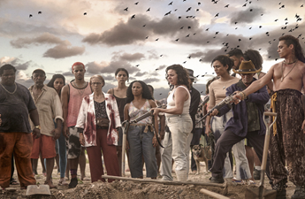

 Informações sobre o Filme: Tempo de Duração: 131 Minutos País: Brasil e França Idioma: Portguês e Francês Lançamento: 15 de Maio de 2019 Gênero: Ficção Científica, Suspense, Ação, Aventura, Drama, Faroeste, Nacional, Mistério Classificação: 16+ Estreia no Brasil: 29 de Agosto de 2019 Título Original: Bacurau Direção: Juliano Dornelles, Kleber Mendoça Filho
Resenha Crítica
“Se for, vá na paz”, é a frase que está na placa indicando a entrada para o vilarejo Bacurau, o personagem principal do filme. Esse local, esquecido pelas autoridades, sofre, principalmente, pela falta de água e investimentos públicos. A película exibe a luta dos habitantes locais quando uma série de acontecimentos surpreendem a população local: o vilarejo não aparece mais no mapa, mortes repentinas e o caminhão pipa é furado por tiros após a morte de Dona Carmelita, uma de suas inquilinas. Os moradores resolvem recorrer a Lunga - um traficante procurado que havia se escondido aos arredores da cidade - para ajudá-los a deter as pessoas que queriam extinguir a vila. O grupo que estava causando esse alvoroço estava em uma missão e acreditavam que seria fácil acabar com essas pessoas, mas se surpreendem ao perceberem que eles não eram tão fracos e bestas assim. É um filme com um enredo bastante elabora e que traz uma mensagem crítica de demasiada importância, visto que esse cenário está presente em várias cidades brasileiras interioranas. Bacurau é uma vila pequena, todos se conheciam e queriam preservar a segurança, eram unidos e trabalhavam em grupo, inclusive, essas pessoas surpreendem também ao prefeito Tony Júnior, que se encontrava em campanha política e como muitos outros só eram presentes nessa época para conseguirem a reeleição. Com a ajuda de Lunga e seus capangas, armaram um plano e no dia que o grupo estavam dispostos a detê-los, deparam-se com a cidade vazia e caem na armadilha da população, que conseguem impedi-los e restaurar novamente a paz local. Ao final do filme, Michael, líder dos invasores e o único que permaneceu vivo, reconhece Tony Júnior quando ele chega ao vilarejo, porém ele se finge de desentendido e diz que nunca tinha o visto antes. A falta de suporte que essa cidade recebia e as más condições, remetem, principalmente, uma crítica ao governo que não dá o suporte necessário a algumas cidades que, muitas vezes, vivem essa realidade. Outro ponto importante é que, mesmo sendo uma pequena vila, possui um museu retratando a história desse povo que mesmo sofrendo injustiças e preconceitos, mantém-se firme e forte.
Temas Propostos
Camadas sociais brasileiras e os problemas enfretados por elas: